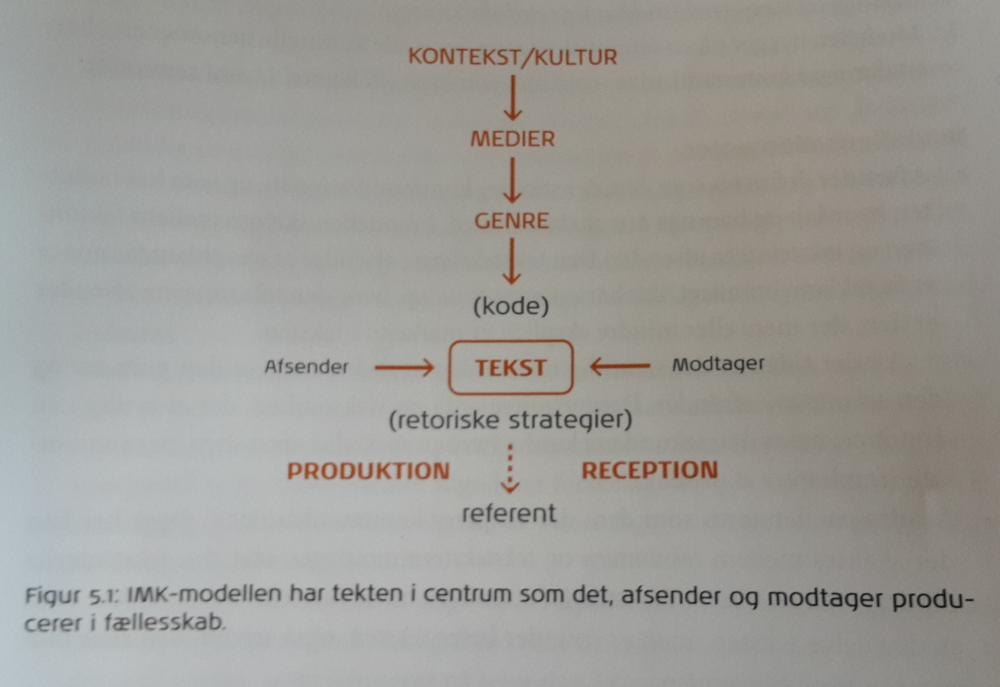
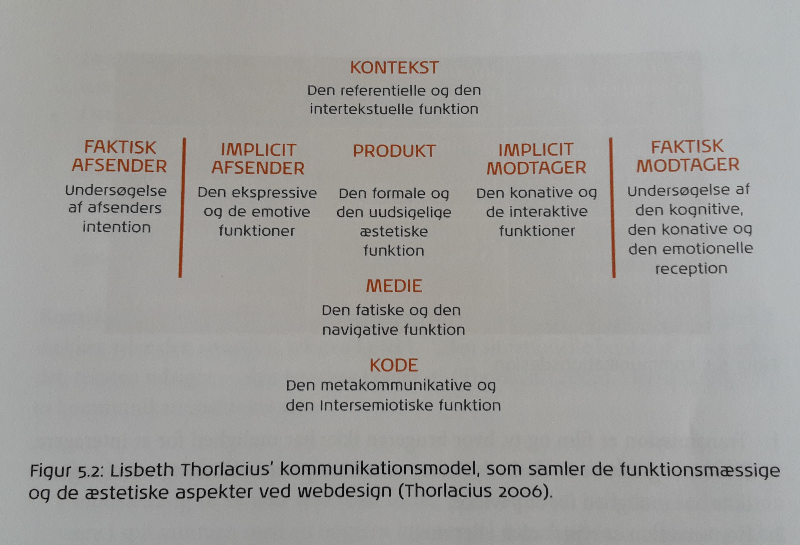
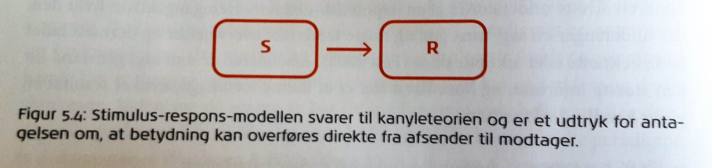
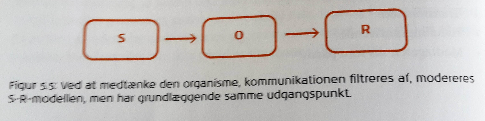
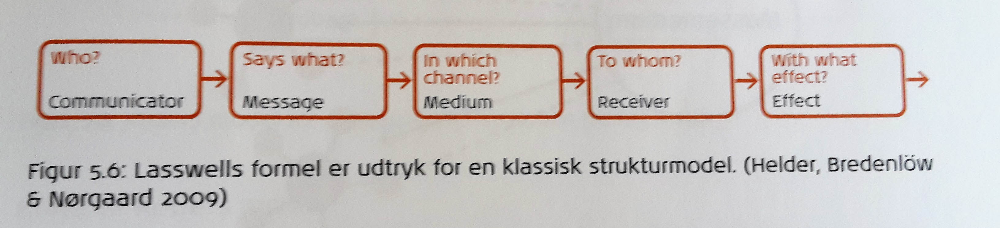
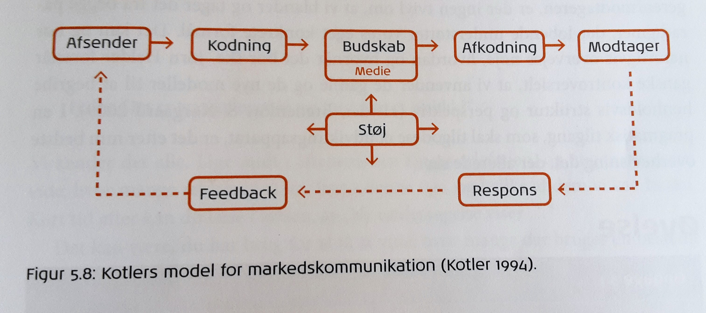

Grundlæggende Kommunikationsteori
De 5 kommunikationsdesign
- Transmission er film og tv, hvor brugeren ikke har mulighed for at interagere.
- Konversation er typisk chat eller mail.
- Konsultation kan være når der logges på ind på et site for, at få bestemte oplysninger.
- Transaktion er f.eks. e-handel, hvor der foregår en gensidig udveksling.
- Registrering kan være stemmer i et talentshow, hvor en computer registrerer indtastningen, som får indflydelse på resultatet.

(Kommunikation i Multimediedesign s. 74)
Kommunikationsparadigmer
Inden for kommunikationsteori findes der to grundlæggende paradigmer; det humanistiske og det samfundsvidenskabelige.
(Kommunikation i Multimediedesign kap. 5 s. 67)Link til opgave
Det humanistiske paradigme
Har individet og modtageren i fokus – disse ses som værende aktive og medskabende, og paradigmet er derfor behovsstyret. I dette paradigme benyttes der fagområder som psykologi, kultur, antropologi, informationsteknologi m.fl.
Kendetegnene inden for det humanistiske paradigme er hermeuntik, fænomenologi og symbolsk interaktionisme.
Karakteristiske træk:
- Subjektivitet
- Fortolkning
- Kvalitativ tilgang
- Induktion
- Situationsbestemt
- Modtager orienteret
- Interaktion mellem mennesker
- Mennesket ses som aktivt
(Kommunikation i Multimediedesign s. 67-69):
Kommunikationsmodeller inden for det humanistiske paradigme:
IMK-modellen (International Markeds Kommunikation)
Denne model sætter selve teksten (udvidet tekstbegreb, så kan også være billeder, grafik osv.) i centrum. Kontekst, kultur og genre er med til at forme teksten, og afsender og modtager er begge en forudsætning for kommunikationssituationen.

Modellen er delt op i følgende elementer:
- Afsender: Den der står bag kommunikationen. Her skelnes mellem tekstintern og tekstekstern; den teksteksterne afsender er f.eks. et reklamebureau og den tekstinterne er den der eksplicit er markeret i teksten. Det kan også være nødvendigt at skelne mellem primær og sekundær afsender; den primære er f.eks. en virksomhed og den sekundære en specialist der fremhæver et produkt i givne annonce
- Modtager: Den der reciperer kommunikationen. Også her skelnes der mellem tekstintern og tekstekstern; den tekstinterne modtager er markeret i teksten og den teksteksterne er den der læser teksten.
Her skelnes også mellem primær og sekundær modtage; primære modtager kan eksempelvis være børn (konsumenter) og sekundære kan være forældre (disponenter) - Teksten: Den kommunikative instans, som skabes i fællesskab af afsender og modtager.
- Referenten: Alt det teksten referer til; dette kan være et produkt, men også den effekt produktet giver
- Koden: Det ”sprog” modtageren skal kunne for, at forstå afsenderen. Her er det vigtigt at huske, at ting har forskellig betydning i forskellige kulturer
- Kontekst/kultur: Den konkrete situation der indrammer kommunikationssituationen og kulturen denne er påvirket af. Svaret på ,,hvem”, ,,hvad”, ,,hvor” og ,,hvornår”.
- Medier: Det der gør kommunikationssituationen mulig; printede medier, elektroniske medier eller mennesket selv, og altså sammenspil mellem anvendelse og situation.
- Genre: Samarbejdet mellem kultur/kontekst, medier og retoriske strategier; det kommunikative formål for både afsender og modtager, trækstrukturer (sproglige træk) dvs. genkendelige træk der gør det muligt for modtageren at afkode afsenderen, retoriske strategier som er virkemidler der anvendes for at trækkene står tydeligere (kan være både verbalsproglig og visuel)
(Kommunikation i Multimediedesign s. 69-72):
Thorlacius’ kommunikationsmodel
Lisbeth Thorlacius’ model har til formål at præsentere et samlet redskab, som kan forklare både de visuelle/æstetiske og de funktionelle aspekter af webkommunikation.

Modellen er delt op i følgende elementer:
- Den faktiske afsender: den der reelt står bag kommunikationen, men er ikke nødvendigvis synlig i produktet
- Den implicitte afsender: den der er synlig i produktet og fremtræder via billeder, tekst, farver mm. Dette kaldes også den ekspressive funktion. Til denne afsender knyttes der også emotive funktioner, som omhandler forholdet mellem afsender og modtagers følelser
- Den implicitte modtager: den som afsender agter at kommunikere til. Den implicitte modtager kan være en person i målgruppen, men også en person i modtagergruppen; eksempelvis kan børn være en målgruppe, hvor forældrene er modtagergruppen da det er dem der er beslutningstagerne. Her anvendes den konative funktion, som handler om hvordan afsender forsøger at påvirke modtagers vilje og adfærd; altså afsender forsøger at få modtager til at udføre en bestemt handling (eksempelvis ”søg” i søgefeltet)
- Den faktiske modtager: Kan ikke fremanalyseres ved hjælp af produktet, men udelukkende gennem en konkret receptionsanalyse; den kognitive reception undersøger hvad modtager forstår f.eks. ved et website, den konative reception undersøger effekten af afsenders konkrete overtalelsesforsøg, den emotionelle reception undersøger hvad modtager føler når denne ser eksempelvis websitet
- Produktet: (ofte et website) er i modellens centrum. Dette dækker udtryk og indhold, som bruger æstetiske funktioner til at kommunikere med; den formale funktion skal leve op til de almene idealer for hvordan et website skal se ud, den sublime æstetiske funktion er det nye og forfriskende på et website
- Konteksten: Den sammenhæng et website indgår i. Den referentielle funktion omhandler indhold fremfor æstetisk udtryk. Den vil ofte være i samspil med logos appel. Den intertekstuelle funktion er f.eks. når der refereres til en anden tekst, og omhandler altså forskellige teksters forbindelse til hinanden
- Mediet: Det der muliggør kontakten mellem afsender og modtager: Den faktiske funktion er det som fastholder modtageren i situationen. De navigative funktioner er den informationsarkitektur der fastholder modtageren, ved at styre læsningen gennem et website
- Koden: (”sprog”) Det system af tegn der tillægger et website en bestemt betydning. Den metakommunikative funktion ses når man sprogligt og/eller visuelt træder ud af en situation og taler om sig selv. Den intersemiotiske funktion er når der benyttes et kodesystem for at forklare et andet kodesystem, f.eks. brug af metaforer.
Det samfundsvidenskabelige paradigme :
Kaldes også for et transmissionsparadigme, og har fokus på afsenderen og dennes placering i omverden. I dette paradigme trækkes der på de samfundsvidenskabelige fagområder som samfundsvidenskab, sociologi, politik m.fl.
Kendetegnet for det samfundsvidenskabelige paradigme er troen på at verden er forudsigelig, og at planlægningen kan ske med udgangspunkt i stabile omgivelser og faste strukturer. Altså at verden ikke forandrer sig hurtigere end, at man kan nå at forstå helheden gennem analyse og at den der undersøger en given sag er i stand til være objektiv.
Karakteristiske træk:
- Objektivitet
- Forklaring
- Kvantitativ tilgang
- Deduktion
- Stabile omgivelser
- Afsenderorienteret
- Transmission
- Handlingsanvisende
- Modtageren ses som passiv
Transmissionsmodeller
Kanyleteorien:
Denne teori bygger på den amerikanske politolog og kommunikationsteoretiker Harold D. Lasswells idé om at medierne påvirker mennesker, og det derfor er muligt at sprøjte idéer tanker og holdninger ind i modtagerne – som en kanyle. Eksempelvis hvis modtager ser mange grove voldsfilm, opstår der en afstumpethed og volden i samfundet vil stige.
S-R-modellen (Stimulus Respons):

Også denne model er baseret på en antagelse om, at mennesket kan styres via stimuli og den respons der medfølger. Jo kraftigere budskab, desto større respons.
S-O-R-modellen (Stimulus Organisme Respons):

I denne model medtænkes, at kommunikationen kanaliseres gennem en organisme – altså uden direkte overførsel. Mennesket anses som værende forskellige og derfor vil der være forskellig respons fra alle modtagere.
(Kommunikation i Multimediedesign s. 78)
Lasswells formel :

Denne formel er en klassisk funktionalistisk strukturmodel, som inddrager mediet og dermed tillægger det betydning. Hans fokus gælder stadig afsenderen, men har medtænker også modtageren.
- Hvem
- Siger hvad
- Gennem hvilken kanal
- Til hvem
- Med hvilken effekt?
Kotlers model for markedskommunikation :

Denne model fortæller hvordan afsender sender et budskab ud, som er kodet på en måde, modtager skal kunne forstå for at afkode det budskab. Modtageren reagerer herefter på budskabet og giver dermed respons tilbage til afsenderen. Gennem hele processen eksisterer der støj (forståelsesmæssige problemer, lydhør støj osv.) fra omgivelserne, hvilket kan forstyrre og påvirke. Feedbacken til afsenderen kan også forstås i bredere betydning, og kan omhandle alt fra øget varesalg til en ændret holdning.